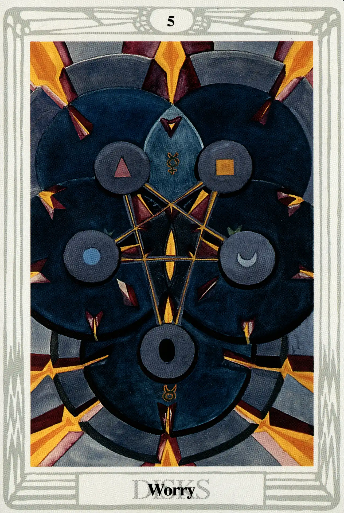

Disks
Five of Disks
Worry

(Mercury in Taurus)
0° to 10° Taurus
April 21 to April 30
Original Title: Lord of Material Trouble.
Golden Dawn Model: From clouds at the bottom of the card, a hand appears holding a branch of a white rose tree. The roses are falling, leaving no buds on the tree. Four disks similar to the ace are arranged in the form of a square with a fifth disk in the center.
Princess Scale for Geburah: Red, flecked Black.
The Four Scales for Mercury: Yellow; Purple; Grey; Indigo, rayed Violet.
The Four Scales for Taurus: Red Orange; Deep Indigo; Deep warm Olive; Rich Brown.
Formula: 5 (Geburah) of Disks (Assiah) + Mercury in Taurus = WORRY
Despite Mercury's active nature and Taurus's tendency to be a bit sluggish, this is not an overly difficult match. People with this aspect in their natal horoscopes are often very patient, practical, and conservative. However, Geburah throws a disturbing and stressful monkeywrench into the mechanism of this otherwise stable device. The natural result is worry, the kind of worry that has you asking, “Am I being pulled into a predicament I can't get out of? Am I in over my head? Will I be crushed by the blind momentum of this situation?
The surface of this card cannot contain the full images of five ponderous gear wheels laid one upon another like the inner workings of a huge and grotesque clock. What appear as five disks in the center of the card are actually only the hubs of these massive wheels. The five hubs are arranged as an averse pentagram, each containing one of the five Hindu tattva symbols of the elements: red triangle of fire, silver crescent of water, blue circle of air, yellow square of earth, and the black egg of spirit. If we look closely, we see that the black egg of spirit is upon the downward point of the pentagram. It is clear that the Five of Disks is pointing to the more nasty meaning of the averse pentagram, that of the triumph of matter over spirit.